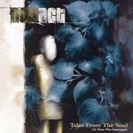

| Artist: | novAct |
| Title: | Tales From The Soul |
| Label: | Sensory SR 3025 |
| Length(s): | 52 minutes |
| Year(s) of release: | 2005 |
| Month of review: | [09/2005] |
| 1) | Sharply Condemned | 4.34 |
| 2) | Hope And Fear | 5.34 |
| 3) | Eternal Life | 5.23 |
| 4) | Path Of Daggers | 4.53 |
| 5) | So Help Me God | 7.01 |
| 6) | Flower | 5.05 |
| 7) | The Rider | 3.51 |
| 8) | Nothing Worth Fighting For | 4.21 |
| 9) | Promises | 6.02 |
| 10) | Bad Religion | 5.36 |
Sharply Condemned displays the strong vocals, which take the lead, without that meaning that there is no musical melody. The twist in melody during the bridge brings in something extra. This strong melody brought in especially by the combination of lush and majestic keys is one of the pilars underneath novAct's music. This is further enhanced by the energy emanated from the music.
So Help Me God does especially well at building up the tension working up to a climax, which is helped quite a lot by Borremans' emotional vocals. In this track the band show that they are not only able to write the pop-structured four minute tracks, but also the ones that are slightly longer and need more composing craft to pull off. With that this is probably the best track of the album.
Promises is led more by rhythm than it is by melody, pulling it more in the direction of metal. The same -to a lesser degree- goes for the closer Bad Religion. The unfortunate effect of this is that the album closes with its two least strong tracks.